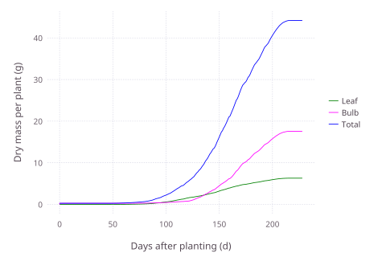
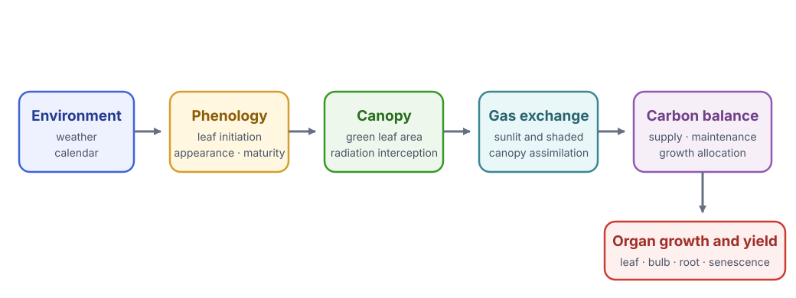
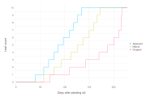
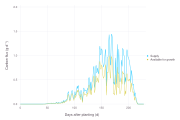
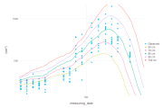
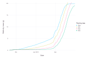

Garlic Growth Model
How does a garlic plant's dry mass change in the leaves and the bulb over a season? Run a season of Garlic.jl with its packaged weather and cultivar settings, then read the two curves. No model declarations or separate weather file are needed.
The model combines the leaf development and expansion study (Annals of Botany, 2019) with the whole-plant biomass and yield study (Frontiers in Plant Science, 2022).
Run a garlic season
Install the two packages in your Julia environment:
using Pkg
Pkg.add(["Cropbox", "Garlic"])The example below is a Korean Mountain hardneck garlic planting in Seattle. The configuration supplied by Garlic already contains the cultivar, weather, and calendar. Run the following blocks in order in one session:
using Cropbox, Garlic
import Dates
config = Garlic.Examples.AoB.KM_2014_P2_SR0
result = simulate(Garlic.Model;
config,
stop = "calendar.count",
snap = s -> Dates.hour(s.calendar.time') == 12,
);The model updates hourly through the end of its calendar. The snap function reads the local time with s.calendar.time' and saves a row at noon each day; it does not change the model's time step. The semicolon keeps Julia from printing the whole table.
Read leaf and bulb mass
Plot three columns of the saved result against DAP (days after planting):
visualize(result, :DAP, [:leaf_mass, :bulb_mass, :total_mass];
kind = :line,
names = ["Leaf", "Bulb", "Total"],
colors = [:green, :magenta, :blue],
xlab = "Days after planting",
ylab = "Dry mass per plant",
)
Around day 125 the leaves are heavier than the bulb. By the last day (228 days after planting), the bulb has about 17.6 g of dry mass per plant and the leaves 6.3 g. The total includes other organs too. These are simulated masses from the packaged scenario, not harvest measurements.
To read the last saved day as numbers, use result[end, [:DAP, :leaf_mass, :bulb_mass, :total_mass]]. You can stop here after your first run. If you inspect the first rows instead, you will see DAP = 0 more than once: the weather calendar begins before planting.
What drives the curves?
The leaf and carbon plots below reuse the same result. To see which systems and parameters produced it, inspect the model type:
look(Garlic.Model)
parameters(Garlic.Model; alias = true)
parameters(Garlic.Model;
alias = true,
recursive = true,
exclude = (Context,),
)The recursive parameter list is intentionally large. A whole-plant model is easier to understand component by component. Useful starting systems include Garlic.Phenology, Garlic.Photosynthesis, Garlic.Weight, and Garlic.Water.
Keep this process chain in mind while reading the output:
| Stage | Useful outputs | Question answered |
|---|---|---|
| calendar and phenology | time, DAP, leaf counts | Is the plant in the expected stage? |
| canopy development | green_leaf_area, LAI | How much active leaf area intercepts light? |
| assimilation and carbon | A_gross, carbon_supply, total_carbon | How much carbon is available for growth? |
| allocation and survival | organ masses, dropped area | Where did that carbon go, and how much tissue remains alive? |

The model proceeds from environment and phenology to canopy gas exchange and carbon allocation and organ growth.
The dry-mass curves above emerge from these processes; they are not fitted directly to time.
In the current implementation, leaf phenology and expansion determine green_leaf_area, which controls LAI, radiation interception, and carbon supply. Accumulated leaf mass does not feed back to leaf area through a specific-leaf-area equation: the leaf-level carbon_effect is fixed at 1.0. SLA is calculated as a diagnostic, and a fixed SLA value is used when estimating potential leaf carbon demand. The process diagram therefore shows the implemented forward path rather than a general SLA-based crop-model feedback.
Follow leaf development
visualize(result,
:DAP,
[:leaves_appeared, :leaves_mature, :leaves_dropped];
names = ["Appeared", "Mature", "Dropped"],
kind = :step,
)
Initiated leaves appear, mature, and eventually drop. The steps represent changes in leaf count, not fractions of a leaf.
To repeat these curves, use the packaged Seattle scenario Garlic.Examples.AoB.KM_2014_P2_SR0 and the noon snapshots above. The field observation comparison uses a different scenario and a Korean field data file; those observations are not measurements from this Seattle run.
Plot initiated and appeared leaves together when diagnosing phenology:
visualize(result,
:DAP,
[:leaves_initiated, :leaves_appeared];
kind = :step,
)leaves_initiated counts primordia already formed at the apex; leaves_appeared counts leaves visible above the soil or sheath. Mature and dropped counts describe later states of those leaves. Their ordering provides a quick consistency check even before leaf area is plotted.
Leaf area and biomass
visualize(result, :DAP, :green_leaf_area; kind = :line)Compare green leaf area with the leaf and bulb dry masses from the same run. Green leaf area determines how much radiation the plant can intercept. Biomass partitioning depends on developmental stage; more leaf mass does not directly produce more area through a fixed specific leaf area.
Trace the carbon path
The workshop follows gross canopy photosynthesis through carbon supply to the carbon available for organ growth. These variables have different units, so plot them separately rather than forcing them onto one axis.
visualize(result, :DAP, :A_gross; kind = :line)
visualize(result,
:DAP,
[:carbon_supply, :total_carbon];
names = ["Supply", "Available for growth"],
kind = :line,
)
visualize(result,
:DAP,
:(total_carbon / total_mass);
ylab = "Relative growth rate",
kind = :line,
)
Daily carbon supply and carbon available for growth. Weather-driven variation is retained rather than smoothed away.
A_gross is a canopy flux. carbon_supply converts assimilated carbon to the plant basis and releases it from the carbon pool; total_carbon also reflects maintenance and growth conversion before partitioning. The derived ratio is a diagnostic, not a separately fitted model parameter. A strange final mass can therefore be traced upstream instead of corrected immediately with an allocation parameter.
Compare observations across parameter values
The workshop overlays measured leaf area with several values of LM_min, the minimum length of the model's longest leaf. This combines an observation plot and grouped model runs without changing the packaged base configuration. Only this comparison needs the additional table-reading packages:
using Pkg
Pkg.add(["CSV", "DataFrames"])using CSV
using DataFrames
observed = CSV.read(
Garlic.datapath("Korea/ricca_2014_field.csv"),
DataFrame,
) |> unitfy
p = visualize(observed, :measuring_date, :leaf_area;
name = "Observed",
kind = :scatter,
)
visualize!(p, Garlic.Model, :time, :green_leaf_area;
config = Garlic.Examples.RCP.ND_RICCA_2014_field,
stop = "calendar.count",
snap = 1u"d",
group = Garlic.Leaf => :LM_min => [60, 70, 80, 90, 100],
legend = "LM_min",
kind = :line,
)
Observed leaf area overlaid with simulations across LM_min values. The plot shows whether the parameter moves the trajectory as expected; it is not by itself a calibration result.
Treat this first as a sensitivity check: does the parameter move the output in the expected direction and period? Selecting the visually closest line is not calibration. Formal fitting also needs a stated metric, defensible bounds, and independent validation; see Evaluate and Calibrate Models.
Compare planting dates
The 2025 workshop varies one parameter while retaining a packaged regional configuration. The pattern is:
base = Garlic.Examples.RCP.ND_RICCA_2014_field
planting_dates = [
ZonedDateTime(2014, 9, 1, tz"Asia/Seoul"),
ZonedDateTime(2014, 10, 1, tz"Asia/Seoul"),
ZonedDateTime(2014, 11, 1, tz"Asia/Seoul"),
ZonedDateTime(2014, 12, 1, tz"Asia/Seoul"),
]
visualize(Garlic.Model, :time, :bulb_mass;
config = (
base,
Calendar => :init => ZonedDateTime(2014, 9, 1, tz"Asia/Seoul"),
),
stop = "calendar.count",
snap = 1u"d",
group = Garlic.Phenology => :planting_date => planting_dates,
legend = "Planting date",
names = ["Sep", "Oct", "Nov", "Dec"],
kind = :line,
)
Changing planting date shifts the timing of bulb growth under the shared weather record. Comparing final values alone would hide most of this response.
For a scientific comparison, ensure every planting date has sufficient weather coverage and use the same cultivar, site, soil, and harvest rule.
Collect organ-level output
Dynamic nodal units and leaves are not ordinary scalar columns. snatch can add one column per leaf rank at snapshot time:
ranked = simulate(Garlic.Model;
config,
index = :time,
target = [],
stop = "calendar.count",
snap = 1u"d",
snatch = (rows, s) -> begin
for nu in s.NU
rows[end][Symbol(nu.rank')] = nu.leaf.green_area'
end
end,
)This is intentionally advanced. The set of columns can change as organs are produced, so downstream code must handle missing ranks. Prefer aggregate outputs for routine calibration and reserve organ-level extraction for morphology questions. The general snatch lifecycle and output rules are documented in Simulation.
A diagnostic order for whole-plant results
When yield or bulb mass looks wrong, inspect processes upstream in this order:
- calendar, weather coverage, and planting date;
- development phase and leaf initiation/appearance;
- green leaf area and
LAI; - sunlit/shaded irradiance and gas exchange;
- carbon supply and growth rate;
- organ partitioning, senescence, and final mass.
Changing a final partition parameter before checking upstream limitations can fit one output while making the internal model inconsistent.
For plotting variants used above—including grouped systems, observation overlays, and expression targets—see Visualization.